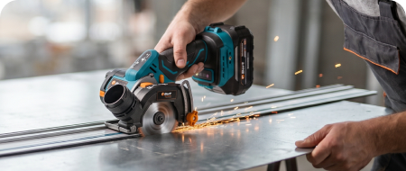
Бесщёточный мотор мощностью 600 Вт и скорость до 18 000 об/мин позволяют пиле BORT BHK-20Li легко справляться с резкой тонколистового металла.
Компактный диск диаметром 76 мм даёт чистый рез без искр и закусывания.
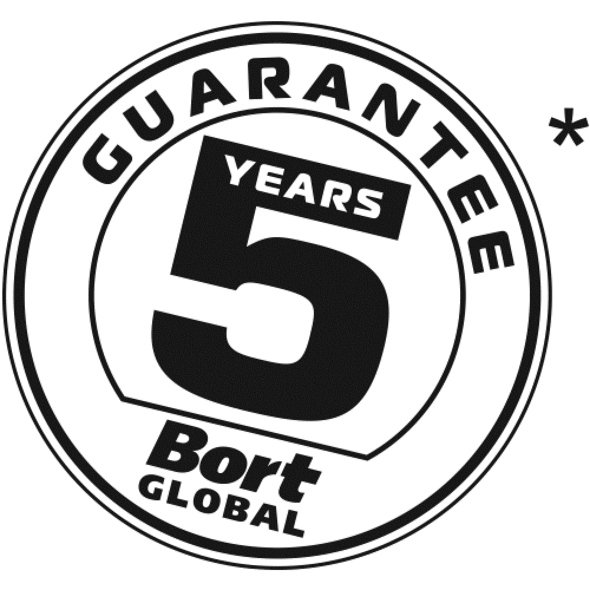
5 летBHK-20Li
*Без АКБ и ЗУ
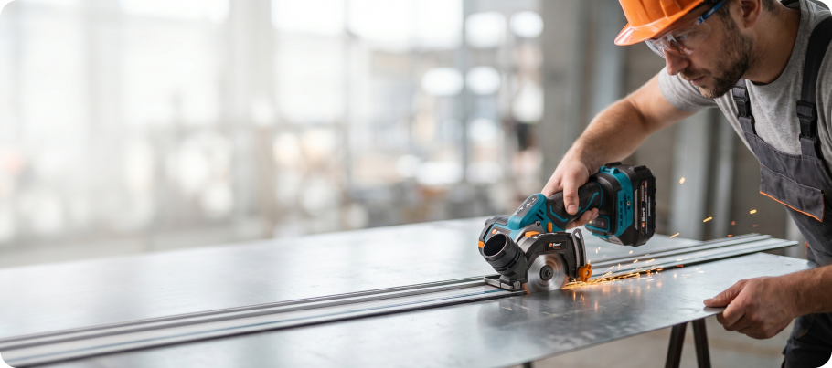
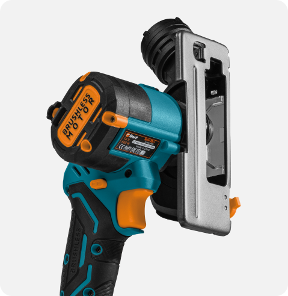
22 мм
Обеспечивает возможность выполнения традиционных прямых резов и обеспечивает высокую точность.
Увеличенный ресурс, мощность и время работы по сравнению с обычными щеточными моторами.
Высокий КПД благодаря эффективному преобразованию энергии.
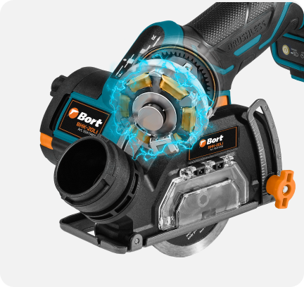
* по сравнению с обычными щеточными моторами

Бесщёточный мотор мощностью 600 Вт и скорость до 18 000 об/мин позволяют пиле BORT BHK-20Li легко справляться с резкой тонколистового металла.
Компактный диск диаметром 76 мм даёт чистый рез без искр и закусывания.
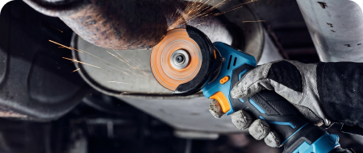
Вес всего 1,1 кг и эргономичный корпус делают пилу идеальной для работы одной рукой в ограниченном пространстве.
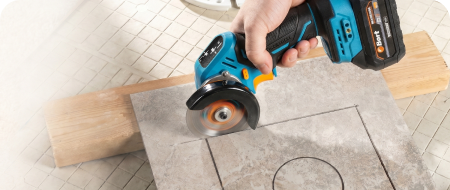
С установленным алмазным диском пила аккуратно режет керамическую плитку и кафель. Высокая частота вращения (до 18 000 об/мин) предотвращает сколы, а штампованная подошва обеспечивает устойчивость при резке.
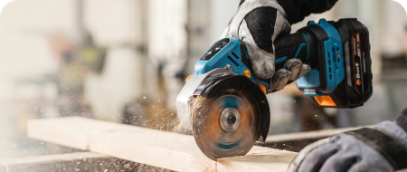
Глубина пропила 22 мм под углом 90° позволяет распускать доски, фанеру и ОСБ. Бесщёточный двигатель не теряет мощность под нагрузкой, а быстросъёмный кожух упрощает замену диска для разных материалов
Электронный контроллер отслеживает ток потребления двигателя. При превышении порогового значения подача питания ограничивается или прекращается. Предотвращает термическое повреждение обмоток статора и магнитов ротора при заклинивании диска.
Масса инструмента — 1,1 кг. Габариты корпуса позволяют работать одной рукой в ограниченном пространстве: в узких нишах, внутри мебельных конструкций, под кровлей, на высоте. Удержание на вытянутой руке не требует значительных физических усилий.
Частота вращения шпинделя регулируется степенью нажатия на пусковую клавишу. Плавный пуск исключает рывок на старте. Возможность начать рез на низких оборотах снижает риск скола кромки и повреждения материала.
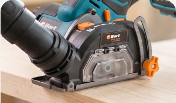
Крепление защитного кожуха выполнено на защелках. Демонтаж для замены оснастки или очистки внутренней полости от опилок производится без инструмента. На кожухе предусмотрен патрубок для подключения шланга пылесоса.
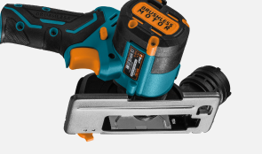
Опорная платформа изготовлена из листового металла методом штамповки. Обладает достаточной жесткостью для устойчивого скольжения по заготовке при сохранении малой массы.
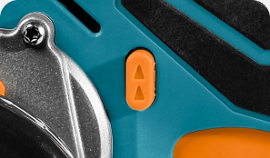
Переключатель направления вращения шпинделя позволяет запустить диск в обратную сторону. При резке металла дает возможность выбора направления выброса искр.
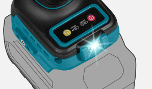
Светодиодный элемент встроен в переднюю часть корпуса. Активируется одновременно с нажатием пускового курка. Освещает линию реза и прилегающую область. Применяется при недостаточном внешнем освещении.
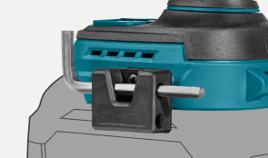
Шестигранный ключ для замены оснастки входит в комплект поставки. На корпусе пилы предусмотрен специальный держатель для фиксации ключа. Такое решение исключает потерю инструмента при транспортировке и хранении, а также обеспечивает постоянный доступ к ключу во время работы.
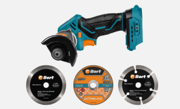
Пила укомплектована сменными дисками для решения широкого круга задач. Отрезной диск по нержавеющей стали — для металла и арматуры. Сегментный алмазный — для керамики, плитки и бетона. Сплошной алмазный — для чистового реза камня, керамогранита и стекла.
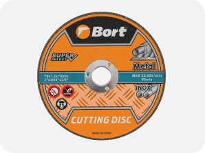
Отрезной диск по нержавеющей стали предназначен для реза черных и нержавеющих сплавов. Применяется при обработке тонколистового металла, профильных труб. Обеспечивает чистый рез без образования заусенцев. Рекомендуемая толщина обрабатываемого материала — до 2–3 мм.
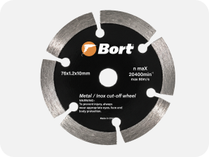
Сегментный алмазный диск имеет прерывистую режущую кромку с прорезями между рабочими сегментами. Прорези служат для отвода тепла и удаления продуктов резания, что снижает риск перегрева оснастки при длительной работе. Предназначен для сухой резки твердых материалов.
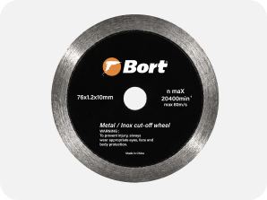
Сплошной алмазный диск имеет непрерывную алмазную кромку без разрывов. Обеспечивает наиболее чистый рез с минимальным сколом по линии реза. Применяется для обработки керамической плитки, керамогранита, натурального и искусственного камня, мрамора, гранита, стекла и стеклоблоков. Рекомендуется при работе с дорогостоящими отделочными материалами, где критично качество кромки.
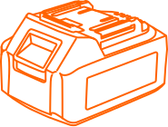
Крепление аккумулятора с единым разъёмом позволяет использовать аккумуляторы любой емкости внутри экосистемы аккумуляторов Bort или Макита 18V LXT, номинальной мощности 18 B.
Это дает возможность использовать уже имеющиеся батареи и экономить до 70% стоимости инструмента при наличии аккумуляторов.
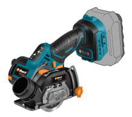
Пила циркулярная аккумуляторная BORT BHK-20Li × 1
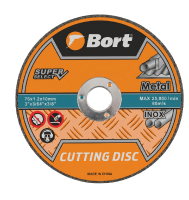
Отрезной диск по нержавеющей стали × 1
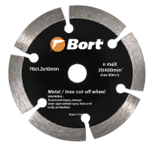
Сегментный алмазный диск × 1
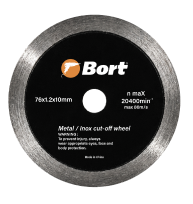
Сплошной алмазный диск × 1
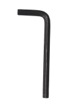
Шестигранный ключ для смены диска × 1
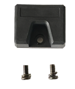
Держатель для ключа × 1
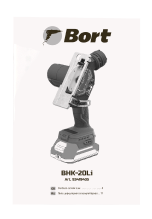
Документация × 1
Аккумуляторная циркулярная пила BORT BHK-20Li (без аккумулятора и зарядного устройства) — это легкий компактный инструмент с бесщеточным двигателем для работы в ограниченном пространстве, на высоте и в труднодоступных местах. Модель создана для тех, кому нужна мобильность и точность реза без привязки к розетке. Благодаря весу всего 1,1 кг (без АКБ) и продуманной эргономике, пила уверенно удерживается одной рукой и позволяет выполнять аккуратные пропилы там, где использование тяжелого сетевого инструмента затруднено или невозможно.
Пила оснащена бесщеточным двигателем мощностью 600 Вт. Отсутствие угольных щеток исключает их механический износ и искрение, увеличивает ресурс мотора и снижает потери энергии. Это значит, что инструмент работает дольше, не требует обслуживания двигателя и выдает стабильную мощность под нагрузкой. Пила совместима с аккумуляторной системой Макита 18V LXT — можно использовать батареи от шуруповерта, перфоратора или другого инструмента этой платформы, включая собственные аккумуляторы BORT.
Это универсальный инструмент для широкого круга задач. Пила справляется с резкой стального и алюминиевого профиля малого сечения, металлических труб небольшого диаметра, твердых пород древесины, фанеры, ДСП, ламината, слоистых пластиков и композитных панелей. Максимальная глубина пропила под углом 90° составляет 22 мм — этого достаточно для сквозной резки дюймовой доски, двух слоёв фанеры по 10 мм или ламината с подложкой. При строительных и отделочных работах пила пригодится для подрезки ламината и плинтусов, раскроя листовых материалов по месту, резки плитки и керамогранита, подгонки гипсокартона. В гараже и мастерской — для резки металлического профиля, арматуры и тонколистового металла. На даче — для ремонта забора, обшивки, настила и мелких строительных задач.
Продуманная конструкция включает всё необходимое для комфортной работы. Регулировка скорости холостого хода в диапазоне от 0 до 18 000 об/мин позволяет плавно входить в материал на низких оборотах без рывка и набирать полную мощность уже в процессе реза. Функция реверса помогает высвободить диск при заклинивании в материале и даёт возможность выбора направления выброса искр при резке металла. Светодиодная подсветка рабочей зоны автоматически включается при нажатии на пусковой курок и освещает линию реза в условиях недостаточного освещения. Электронная защита от перегрузки отключает или ограничивает мощность двигателя при критических нагрузках, предотвращая его повреждение при заклинивании диска. Быстросъемный кожух на защелках упрощает замену оснастки и очистку от опилок, а патрубок на кожухе позволяет подключить строительный пылесос. Поворотный кожух с фиксацией даёт возможность подстроить положение рукоятки под рабочую позу — диск при этом сохраняет строго вертикальную ориентацию, а глубина пропила не меняется. Это снижает нагрузку на запястье и улучшает контроль при работе на весу, над головой или в ограниченном пространстве. Шестигранный ключ для смены диска удобно фиксируется в специальном держателе на корпусе — он всегда под рукой и не потеряется при транспортировке.
BORT BHK-20Li — это надежный мобильный инструмент для тех, кто ценит компактность и универсальность. Пила рассчитана как на бытовое, так и на полупрофессиональное использование. В комплект поставки входит всё необходимое для начала работы: пила BORT BHK-20Li (без АКБ и ЗУ), шестигранный ключ для смены диска, отрезной диск по нержавеющей стали, алмазный сегментный диск, алмазный сплошной диск и руководство по эксплуатации. Широкая комплектация тремя дисками позволяет работать с металлом, твердыми строительными материалами и выполнять чистовую обработку облицовочных покрытий сразу после распаковки. Гарантия производителя составляет 2 года. Выбирайте мобильность и точность с BORT BHK-20Li!